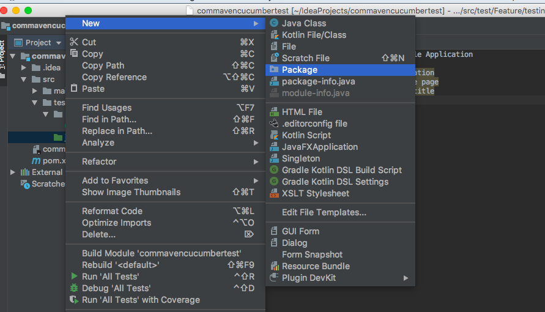
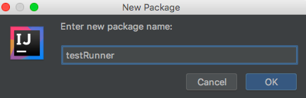
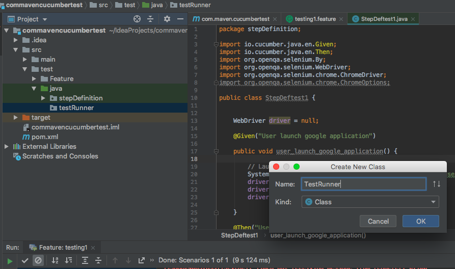
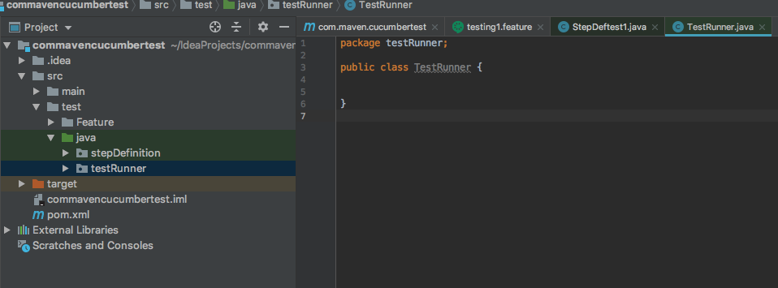
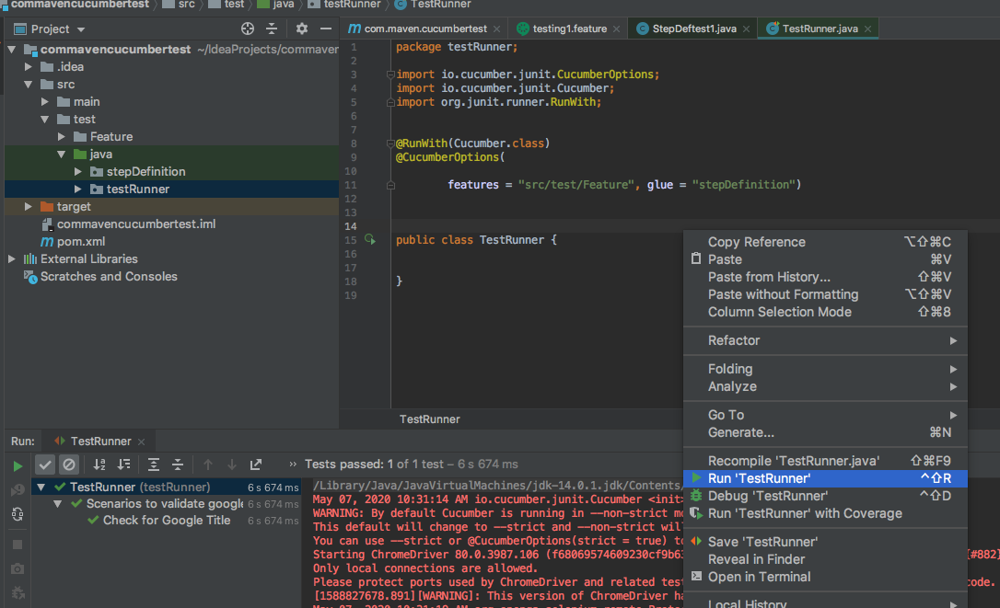
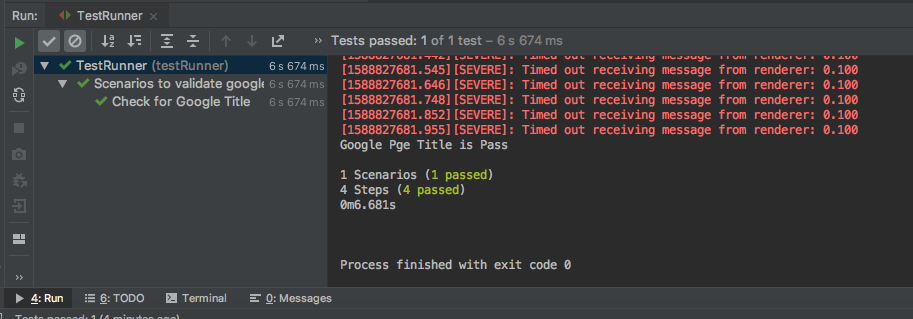

Test runner class also acts as an interlink between feature files and step definition classes.
Right click on maven Java folder --> New --> Package --> Give Package name as testRunner.
Right click on testRunner package --> New --> Class --> Give class name as
any class name.




Modify your testRunner class file as below.
package testRunner; import io.cucumber.junit.CucumberOptions; import io.cucumber.junit.Cucumber; import org.junit.runner.RunWith; @RunWith(Cucumber.class) @CucumberOptions( features = "src/test/Feature", glue = "stepDefinition") public class TestRunner { }
# features = path to my feature files.
# glue = Package name where all stepDefinition classses are present.
Right click on testRunner class and run it.

Console for test result :

First Test Execution Using Cucumber Is Completed.